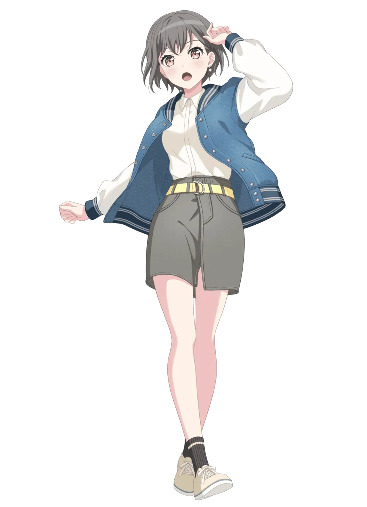
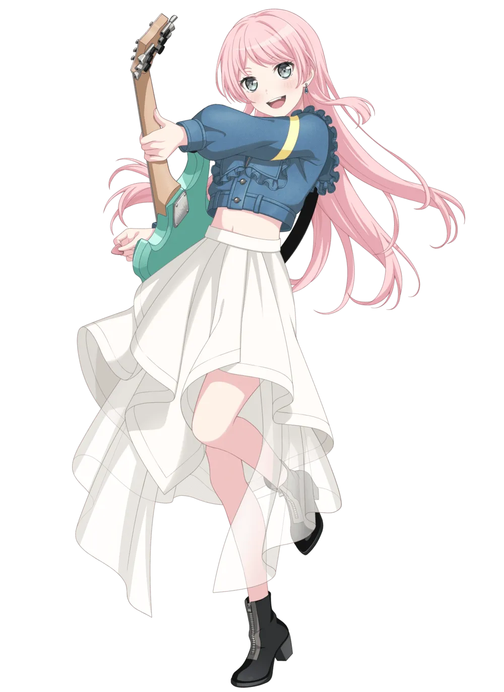
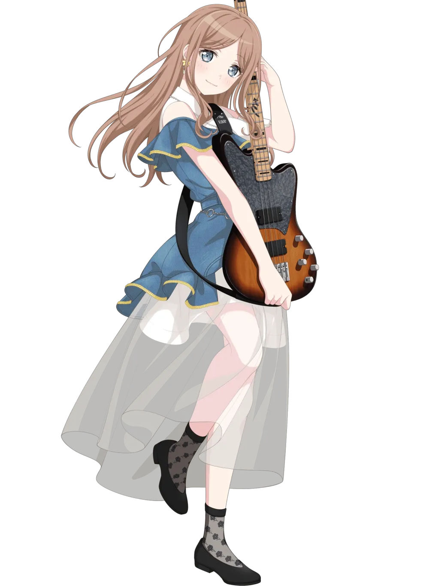
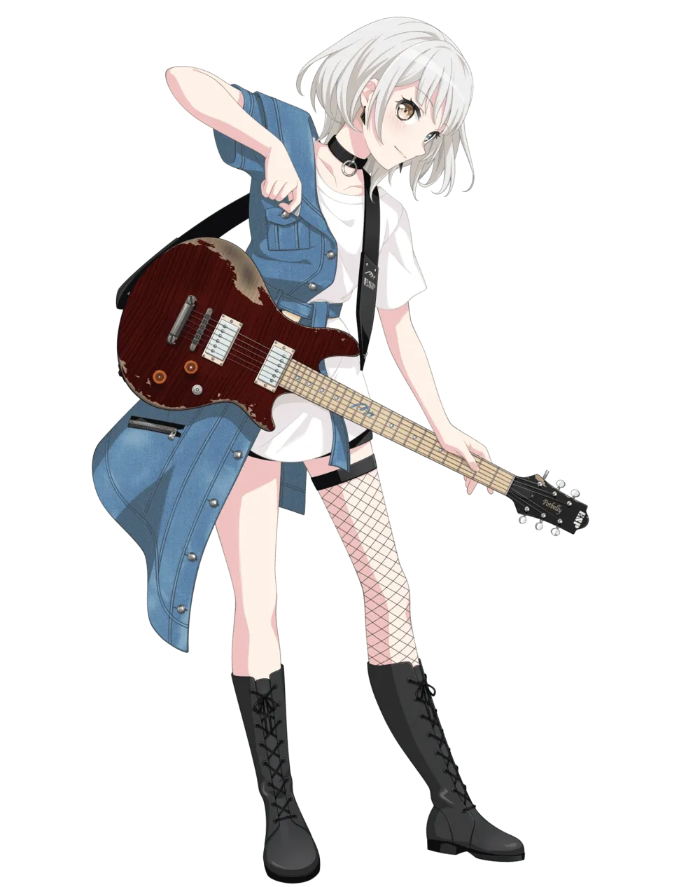
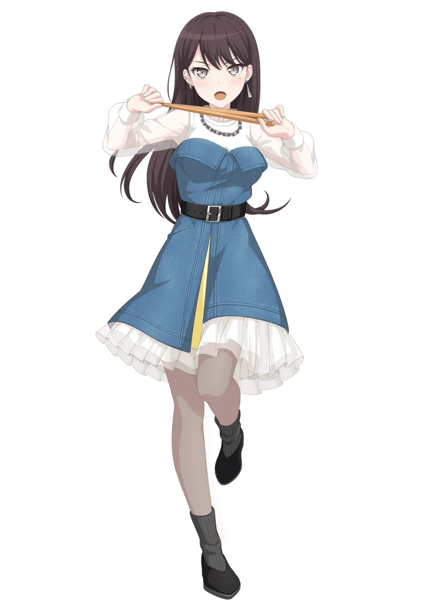

Tentang
MyGO!!!!! merupakan girls band music dalam franchise BanG Dream!
Grup ini terdiri dari lima anggota, yaitu Tomori pada vokal, Chihaya Anon dan Kaname Raana pada gitar,
Nagasaki Soyo pada bass, dan Shiina Taki pada drum. Ini adalah band yang lahir dari sinkronisasi "realitas" dan "virtual".
Para anggota band ini awalnya tidak dikenal dan menyembunyikan wajah mereka saat tampil,
sebelum akhirnya mereka terungkap selama MyGO!!!!! 4th LIVE.

Member

Tomori Takamatsu (Vocalist)

Anon Chihaya (Rhythm Guitarist)

Soyo Nagasaki (Bassist)

Raana Kaname
(Lead Guitarist)

Taki Shiina (Drummer)
Lagu
Original Song
- Mayoi Uta
- Hitoshizuku
- Shiori
- Melody
- Haruhikage
- Namonaki
- Senzai Hyoumei
- Utakotoba
- Tanebi
- Noroshi
- Utaimashou Narashimashou
Konser

- MyGO!!!!! 1st LIVE - July 3, 2022
- MyGO!!!!! 2nd LIVE - September 10, 2022
- BanG Dream! Special☆LIVE Girls Band Party! 2022 - November 12, 2022
- Bushiroad's 15th Anniversary Live - November 13, 2022
- MyGO!!!!! 3rd LIVE - November 26, 2022
- BanG Dream! 11th☆LIVE - February 4-5, 2023
- MyGO!!!!! 4th LIVE - April 9, 2023
- MyGO!!!!! 5th LIVE - August 12, 2023
- BanG Dream! 12th☆LIVE - November 3-5, 2023
|